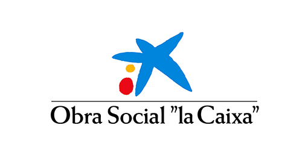
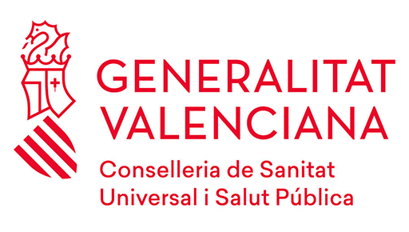
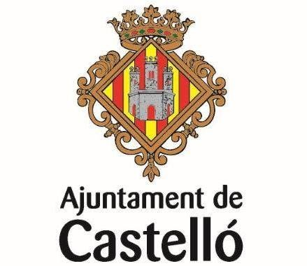
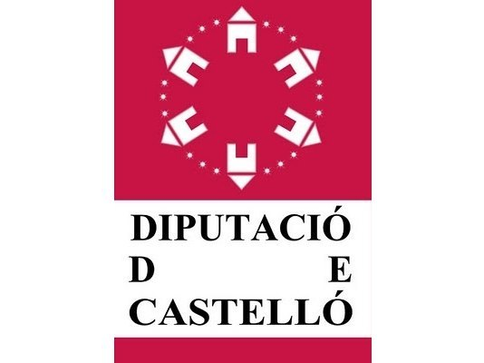

Click para empezar

Bienvenido a esclerodermia.es
La información y Consejos que A.D.E.C. da en esclerodermia.es, NO son para abrumar a las personas afectadas de esclerodermia o a los familiares, o a aquellas que sospechan que podrían padecerla, sino proveerlas de información útil en la que buscar, qué puede ocurrir durante la trayectoria de la enfermedad, y algunas de las cosas que se pueden hacer en caso de que estos síntomas se llegasen a desarrollar.
Los contenidos que se ofrecen son:
- Información completa de la asociación ADEC.
- Todo lo que se sabe hasta el momento sobre la esclerodermia.
- Escritos de la asociación.
- videos informativos de actividades de la asociacion y sobre la esclerodermia.
- Todas las actividades en redes sociales de la asociación.
- Como contactar con la asociación.
Esta información general, NO tiene intención de dar consejos médicos, ni responder cuestiones sobre los problemas particulares, y bajo ningún concepto sustituir la ayuda y el cuidado de profesionales cualificados. La mención de algún tratamiento sólo tiene como objetivo informar y no constituye el respaldo de dicho tratamiento.

Entidades colaboradoras:





Política de Calidad
Asociación de Esclerodermia Castellón (ADEC) define esta Política de Calidad con el fin de mantener la satisfacción y confianza de las personas afectadas por esclerodermia y de sus familiares y allegados, así como la de nuestros trabajadores.